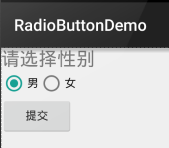
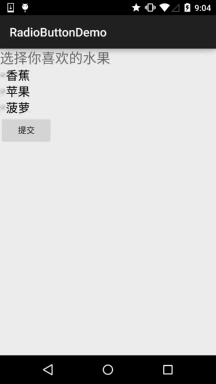

一、本节引言：
本节给大家带来的是Andoird基本UI控件中的RadioButton和Checkbox; 先说下本节要讲解的内容是：RadioButton和Checkbox的
- 基本用法
- 事件处理；
- 自定义点击效果；
- 改变文字与选择框的相对位置；
- 修改文字与选择框的距离
其实这两个控件有很多地方都是类似的，除了单选和多选，事件处理，其他的都是类似的！ 另外还有一个ListView上Checkbox的错位的问题，我们会在ListView那一章对这个问题进行 解决，好的，开始本节内容~ 本节官方文档API：RadioButton；CheckBox；
二、基本用法与事件处理：
1）RadioButton(单选按钮)
如题单选按钮，就是只能够选中一个，所以我们需要把RadioButton放到RadioGroup按钮组中，从而实现 单选功能！先熟悉下如何使用RadioButton，一个简单的性别选择的例子： 另外我们可以为外层RadioGroup设置orientation属性然后设置RadioButton的排列方式，是竖直还是水平~
效果图：

PS:笔者的手机是Android 5.0.1的，这里的RadioButton相比起旧版本的RadioButton，稍微好看一点~
布局代码如下：
<LinearLayout xmlns:android="http://schemas.android.com/apk/res/android"
xmlns:tools="http://schemas.android.com/tools"
android:id="@+id/LinearLayout1"
android:layout_width="match_parent"
android:layout_height="match_parent"
android:orientation="vertical"
tools:context=".MainActivity" >
<TextView
android:layout_width="wrap_content"
android:layout_height="wrap_content"
android:text="请选择性别"
android:textSize="23dp"
/>
<RadioGroup
android:id="@+id/radioGroup"
android:layout_width="wrap_content"
android:layout_height="wrap_content"
android:orientation="horizontal">
<RadioButton
android:id="@+id/btnMan"
android:layout_width="wrap_content"
android:layout_height="wrap_content"
android:text="男"
android:checked="true"/>
<RadioButton
android:id="@+id/btnWoman"
android:layout_width="wrap_content"
android:layout_height="wrap_content"
android:text="女"/>
</RadioGroup>
<Button
android:id="@+id/btnpost"
android:layout_width="wrap_content"
android:layout_height="wrap_content"
android:text="提交"/>
</LinearLayout>
获得选中的值：
这里有两种方法，
第一种是为RadioButton设置一个事件监听器setOnCheckChangeListener
例子代码如下：
RadioGroup radgroup = (RadioGroup) findViewById(R.id.radioGroup);
//第一种获得单选按钮值的方法
//为radioGroup设置一个监听器:setOnCheckedChanged()
radgroup.setOnCheckedChangeListener(new OnCheckedChangeListener() {
@Override
public void onCheckedChanged(RadioGroup group, int checkedId) {
RadioButton radbtn = (RadioButton) findViewById(checkedId);
Toast.makeText(getApplicationContext(), "按钮组值发生改变,你选了" + radbtn.getText(), Toast.LENGTH_LONG).show();
}
});
运行效果图：

PS：另外有一点要切记，要为每个RadioButton添加一个id，不然单选功能会生效！！！
第二种方法是通过单击其他按钮获取选中单选按钮的值，当然我们也可以直接获取，这个看需求~
例子代码如下：
Button btnchange = (Button) findViewById(R.id.btnpost);
RadioGroup radgroup = (RadioGroup) findViewById(R.id.radioGroup);
//为radioGroup设置一个监听器:setOnCheckedChanged()
btnchange.setOnClickListener(new OnClickListener() {
@Override
public void onClick(View v) {
for (int i = 0; i < radgroup.getChildCount(); i++) {
RadioButton rd = (RadioButton) radgroup.getChildAt(i);
if (rd.isChecked()) {
Toast.makeText(getApplicationContext(), "点击提交按钮,获取你选择的是:" + rd.getText(), Toast.LENGTH_LONG).show();
break;
}
}
}
});
运行效果图：

代码解析： 这里我们为提交按钮设置了一个setOnClickListener事件监听器,每次点击的话遍历一次RadioGroup判断哪个按钮被选中我们可以通过下述方法获得RadioButton的相关信息！
getChildCount( )获得按钮组中的单选按钮的数目；getChinldAt(i):根据索引值获取我们的单选按钮isChecked( ):判断按钮是否选中
2）CheckBox(复选框)
如题复选框，即可以同时选中多个选项，至于获得选中的值，同样有两种方式： 1.为每个CheckBox添加事件：setOnCheckedChangeListener 2.弄一个按钮，在点击后，对每个checkbox进行判断:isChecked()；
运行效果图：

实现代码：
public class MainActivity extends AppCompatActivity implements View.OnClickListener,CompoundButton.OnCheckedChangeListener{
private CheckBox cb_one;
private CheckBox cb_two;
private CheckBox cb_three;
private Button btn_send;
@Override
protected void onCreate(Bundle savedInstanceState) {
super.onCreate(savedInstanceState);
setContentView(R.layout.activity_main);
cb_one = (CheckBox) findViewById(R.id.cb_one);
cb_two = (CheckBox) findViewById(R.id.cb_two);
cb_three = (CheckBox) findViewById(R.id.cb_three);
btn_send = (Button) findViewById(R.id.btn_send);
cb_one.setOnCheckedChangeListener(this);
cb_two.setOnCheckedChangeListener(this);
cb_three.setOnCheckedChangeListener(this);
btn_send.setOnClickListener(this);
}
@Override
public void onCheckedChanged(CompoundButton compoundButton, boolean b) {
if(compoundButton.isChecked()) Toast.makeText(this,compoundButton.getText().toString(),Toast.LENGTH_SHORT).show();
}
@Override
public void onClick(View view) {
String choose = "";
if(cb_one.isChecked())choose += cb_one.getText().toString() + "";
if(cb_two.isChecked())choose += cb_two.getText().toString() + "";
if(cb_three.isChecked())choose += cb_three.getText().toString() + "";
Toast.makeText(this,choose,Toast.LENGTH_SHORT).show();
}
}
三、自定义点击效果
虽然5.0后的RadioButton和Checkbox都比旧版本稍微好看了点，但是对于我们来说 可能还是不喜欢或者需求，需要自己点击效果！实现起来很简单，先编写一个自定义 的selctor资源，设置选中与没选中时的切换图片~！
实现效果图如下：

PS:这里素材的原因，有点小...
<?xml version="1.0" encoding="utf-8"?>
<selector xmlns:android="http://schemas.android.com/apk/res/android">
<item
android:state_enabled="true"
android:state_checked="true"
android:drawable="@mipmap/ic_checkbox_checked"/>
<item
android:state_enabled="true"
android:state_checked="false"
android:drawable="@mipmap/ic_checkbox_normal" />
</selector>
写好后，我们有两种方法设置，也可以说一种吧！你看看就知道了~
①android:button属性设置为上述的selctor
android:button="@drawable/rad_btn_selctor"
②在style中定义一个属性，然后通过android style属性设置，先往style添加下述代码：
<style name="MyCheckBox" parent="@android:style/Widget.CompoundButton.CheckBox">
<item name="android:button">@drawable/rad_btn_selctor</item>
</style>
然后布局那里:
style="@style/MyCheckBox"
四、改变文字与选择框的相对位置
这个实现起来也很简单，还记得我们之前学TextView的时候用到的drawableXxx吗？ 要控制选择框的位置，两部即可！设置：
Step 1. android:button="@null"Step 2. android:drawableTop="@android:drawable/btn_radio"
当然我们可以把drawableXxx替换成自己喜欢的效果！
五、修改文字与选择框的距离
有时，我们可能需要调节文字与选择框之间的距离，让他们看起来稍微没那么挤，我们可以：
- 在XML代码中控制： 使用android:paddingXxx = "xxx" 来控制距离
- 在Java代码中，稍微好一点，动态计算paddingLeft!
示例代码如下：
rb.setButtonDrawable(R.drawable.rad_btn_selctor);
int rb_paddingLeft = getResources().getDrawable(R.mipmap.ic_checkbox_checked).getIntrinsicWidth()+5;
rb.setPadding(rb_paddingLeft, 0, 0, 0);
六、本节小结：
好的，关于RadioButton和Checkbox就讲到这里，如果有什么写得不对的，不好的，或者有好的建议欢迎指出 万分感激~谢谢...